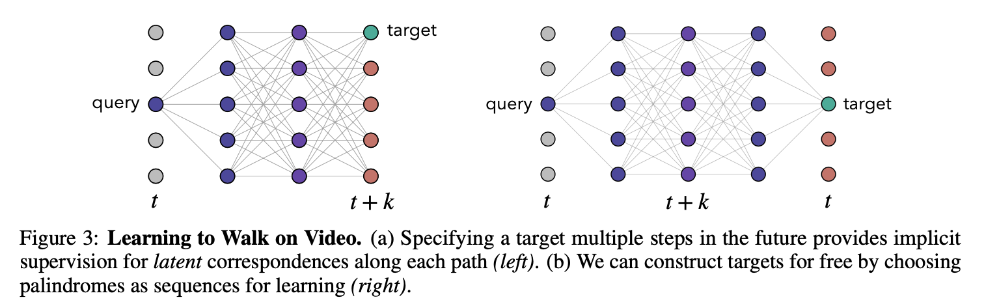

45 Space-Time Correspondence as a Contrastive Random Walk
1. Read the title and make an opinion of what’s in the paper (e.g., the area, the task)
Year 2020
Space-Time Correspondence as a Contrastive Random Walk
Space-Time is just another way to say video. Where the location of objects is of importance, and the time is based on the sequence of video frames. Contrast refers to the training technique, which is a SSL based approach. Random Walk is leveraging theory from graph structures.
I think this paper could afford an easier to understand title, but I understand how naming things is difficult!
And to start the post off like the paper, I begin with this image:
2. Read the abstract well and form a hypothesis of
- What’s new in the paper?
- Do you have a clear overview about what the paper is all about?
This paper proposes a simple self-supervised approach for learning a representation for visual correspondence from raw video.
Simply put, the task is SSL through video.
We cast correspondence as prediction of links in a space-time graph constructed from video.
I think the use of ‘space-time’ is a unnecessarily distracting and causes me to think of science fiction. Technically correct, but what about ‘patch embedding graph’ or something more specific?
Anyway, the abstract is highlighting the importance of links in this constructed graph representation as a prediction task.
For every graph, you need to know what the nodes and edges mean:
In this graph, the nodes are patches sampled from each frame, and nodes adjacent in time can share a directed edge.
We learn a representation in which pairwise similarity defines transition probability of a random walk, so that long-range correspondence is computed as a walk along the graph.
This is key to the paper, a learned representation via SSL in which that representation defines the long range correspondence graph.
Targets for learning are formed without supervision, by cycle-consistency: the objective is to maximize the likelihood of returning to the initial node when walking along a graph constructed from a palindrome of frames.
The problem of needing to define positive and negative pairs is solved by recycling the same sequence backwards, so that any sequence can be reframed to build positive and negative pairs.
The abstract then describes single path-level constraints and multi-path constraints derived from the proposed graph.
3. Look at the images and extract a set of “questions” about what is not clear about their method from the images. Now your job is to answer these questions by reading the paper.
Looking back at figure 1, I can see how video is divided up into multiple images, and how if there is movement in the video, then tracking the paths that this patch follows would provide good understanding of the scene.
- How long of sequences are used?
- What is actually predicting the edges?
Ahh, this makes sense. So the edges are predicted by the edge similarities of the learned representations, learned through the contrastive framework I assume. Then the more similar the patch, the higher probability the Random Walk will choose that affinity.
This leads me to a couple of questions:
- If you are tracking a representative patch, like a shoe, and there are multiple shoe’s in each image, how does it represent the shoe?
- If given a completely different representation, then the space doesn’t seem like it would be general
- If given similar latent representations, then the task of solving the problem of finding representations that track each individual part would be harder.
I wonder how the paper trades off these decisions.

Figure 3 shows that by using the palindrome setup, you can by definition build a target that always is in the same location as the query, because you reverse back to the query. I wonder why the model doesn’t collapse to just passing the position through and repeating the position information.
4. Read the method aiming to answer your “questions” about the paper. Focus on understanding only the things relevant for the story (i.e., to understand the contribution).
They describe the matrix normalized by softmax with a temperature component that defines the affinity matrix from image at to image at .
Thus each step in the graph takes into account the affinities of the previous graph, with the new affinity matrix given by the new set of images in time. The final formulation is simply .
I think you have to take the baby steps to understand the palindrome configuration by considering the supervised case when you have a query and target that are not at the same location (but you have the label to supervise the new target’s location).
The paper defines the loss as a cross entropy loss where you predict the affinity matrix given a starting point and a . This makes sense to me. However, I don’t see how this doesn’t collapse in the SSL case.
The also have a great insight they term as Edge Dropout to randomly dropout edges of the affinity matrix, which forces a stronger distributed representation of the embeddings so to provide a representation that gets closer to predicting the full object.
5. Read the experiments to convince you that the show results are caused by their claim. Be aware that the experiments highlighted are the best scenarios and are fully hyper-parameter tuned.
They take their learned representation to a number of video label propagation tasks by using a simple knn approach.
They post good results on DAVIS 2017, and describe an adaptation technique that they train on the video (self-supervised) before prediction, and improved their DAVIS results consistently by a point.
Figure 5 shows some experiments, particularly of note is that the path length ( images in sequence) improved for longer sequences.
6. Make sure you answered all your questions. Did the authors convince you that their story has the effect that they claim?
This is a very interesting work. I think there will clearly be success in learning from natural videos, because the ease to capture high quality lengthy data is easy from a human standpoint, and includes massive amounts of learnable information.